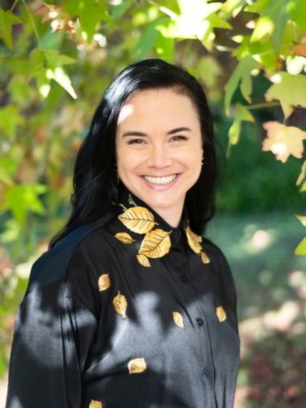
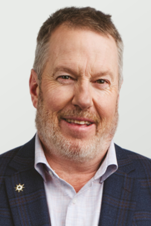
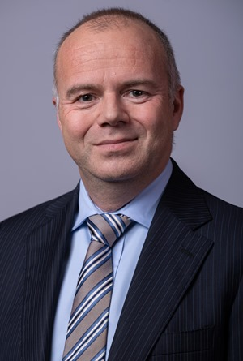
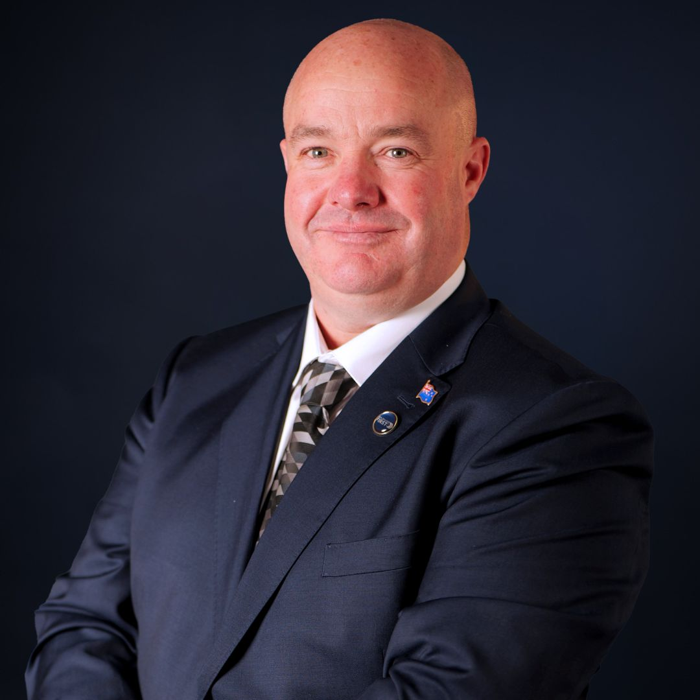
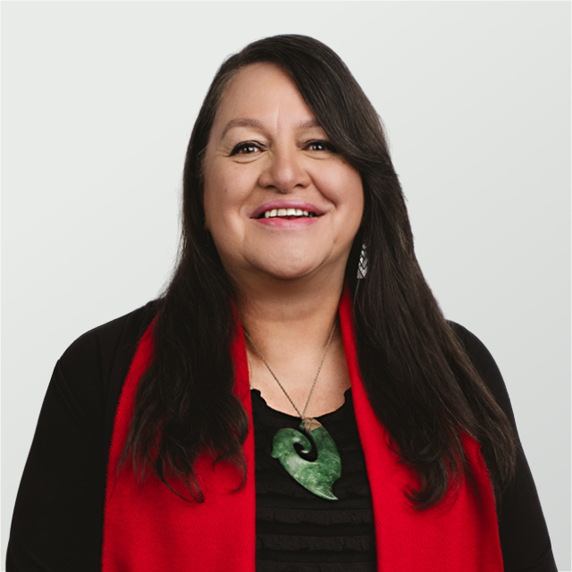

Hear from the people who could represent you in government on why your vote matters!
Why do you think that voting is important?
I think voting is important because it is just one more way for us to remember that "the world is something that we make, and [we] could just as easily make it differently."
It is important to remember that we are creating the world in everything that we do: we might as well do so on purpose.
What advice would you give to people who are hesitant to vote?
I get it! It can be difficult to see the point of voting, especially when it feels like one vote will not matter, there is so much conflicting information, and you are not sure anyone has the right ideas anyway. My advice is to MAKE SURE you are registered before the 25 October; if you are not registered by then, you cannot vote this year. You don't want to miss out, so you might as well register just in case. Before you vote, think about what matters to you. Do you think it is most important that you agree with a candidate on important issues (the environment, economy, etc)? Is it important that they seem "relatable" to you, that they get where you are coming from? Or do you just try to find whoever you think is the smartest person in the room? The point is that it is YOUR decision. You get to decide your values, and you get to turn those values into your vote.
To feel more confident, ask your school for some information about how voting works in New Zealand: did you know that you get 2 votes here? And not all candidates and Parties are trying to get you to vote for them twice! For example, I am an Opportunity Party candidate, but I am not too concerned about the candidate/electorate vote. But I am asking for people to Party Vote Opportunity. Understanding the difference will help you feel much more confident :)
Why do you think that voting is important?
Voting is important because it is your power to choose who will represent you and act in your best interests and the best interests of your loved ones.
Politics affects us in many aspects of our day to day lives – for example through the cost of housing or transport or study, through access to jobs or education or healthcare, or through how healthy our environment is and how well prepared we are for the impacts of climate change.
What advice would you give to people who are hesitant to vote?
You don’t need to know everything about all policies in order to vote – it’s important for you just to have your say and vote for a representative or party with aligned values who you trust to represent you.
There is a lot of fear and misinformation out there, but there are also good representatives with strong values who genuinely care about the communities they serve.
It’s particularly important to make sure you are enrolled to vote in this election by the 25th October, as the current government has now removed the right to enrol after that date or on election day itself.
Youth enrolment numbers are currently low, so if young people turn out in force this election there is a very real chance that you will have a great impact on the shape of the next government and the policies which will impact your life over the years to come.
Francisco Hernandez is currently a Green List MP based in Otepoti, Dunedin.
Why do you think that voting is important?
Voting is a privilege and many people worked exceptionally hard to give women, non-landowners, and other groups the vote. Central government makes laws and collects and spends taxes on health, education, looking after the vulnerable, prisons, courts, environment and more. Different political parties have different views on how to prioritise this spending and what laws to make. Voting contributes to these decisions by choosing the party that best aligns with your values. In NZ votes count because we have mixed member proportional representation so you have two votes – one for the electorate MP and one for the party.
Rachel Brooking is currently the MP for Dunedin.
Why do you think that voting is important?
I believe that voting is important because it is one of the most direct ways people can
have a say in the decisions that affect their lives, their families, and their communities.
Parliament makes decisions on a wide range of issues such as education, health,
transport, housing, the economy, law and order, and the environment. When young
people vote, they help ensure the decisions made in Wettington reflect the views and
priorities of the next generation, as well as those of older voters.
What advice would you give to people who are hesitant to vote?
My advice would be to start by learning about the issues
that matter most to them, rather than feeling they need to know everything about
politics all at once. lt is perfectly reasonable to ask questions, compare different views,
and take time to form an opinion. Enrolling and voting is not about agreeing with a
politician or party on every issue; rather it is about taking responsibility for your own
voice and using the opportunity generations before us fought to secure.
Joseph Mooney is currently the MP for Southland.
Why do you think that voting is important?
Voting is an important act to have your say on the future direction of your country”.
It is especially important for young people who have a longer term horizon to have a say in shaping what that future should look like.
Don’t leave it solely to others to make those decisions for you.
Mark Patterson is currently an NZ First list MP based in the Taieri Electorate.
Why do you think that voting is important?
Voting gives you a say in who makes the rules and decides how public money is spent.
Young people will live with today’s decisions for decades, so it is important that their views count.
What advice would you give to people who are hesitant to vote?
If you are hesitant, don’t feel that you need to know everything before voting. Work out which issues matter to you, look at what the parties are proposing and make the best choice you can.
Laura McClure is currently an ACT List MP based in the Wigram Electorate.
Read about the Southland Candidates here!
About Bianca:
I'm Bianca Beebe, a public health researcher and labour organiser who wants to build a sovereign, solarpunk future for all of us in New Zealand.
For me, that means creating a society in which everyone's basic needs are guaranteed, so the incredible talent in this country can be spent developing new inventions and businesses--not just grinding it out to pay rent.
I'm asking for you to give your party vote to Opportunity Party this election because we want to use technology to benefit the environment, invest in your great ideas, and protect our democracy (which includes making the voting age 16!).

The Southland candidate for The Opportunity Party is Bianca Beebe.
About Joseph:
Joseph was born in Hawke’s Bay and grew up in the country.
Joseph left school without any qualifications and later went to university, obtaining an honours degree in Law. He graduated from university on the same day as his youngest sister, the first in their family to do so.
Living in Central Otago, Joseph became a senior trial lawyer and built his own law practice, appearing in courts throughout the South.
In 2017 he was appointed by the Deputy Solicitor General to the Crown Prosecution Panel for the Invercargill Crown Solicitor. Joseph has also been appointed by the Court as a Youth Advocate.
Joseph has been MP for Southland since 2020.
He is Chair of the Social Services and Community Select Committee and a member of the Regulations Select Committee.
Joseph has been an Army reservist and volunteer firefighter.
He has three children with his wife Silvia. In his spare time, he likes to ski, mountain bike, and spend time with his family.
Joseph is currently the MP for Southland and is running for candidacy again this election.
About Peter:
Peter brings long standing engagement with farming families and rural communities and a clear understanding of the pressures they face.
His work across farming, environmental, and conservation issues is grounded in balance, clarity, and practical outcomes rather than rhetoric.
A 30 year volunteer firefighter, Peter has also provided peer support to fellow volunteers. This experience has shaped a leadership style built on calm decision making.
Peter has consistently advocated for Southland, with a clear view that government funded services must match the need of the people of Southland.

The Southland Candidate for the Labour Party is Peter McDonald
About Todd:
Todd Stephenson is a lifelong ACT supporter and a champion for personal freedom and opportunity. Born in Lumsden and raised across rural Southland,
Todd grew up with a deep respect for hard work and community values. He studied law at the University of Otago and later broadened his understanding of public policy with further studies at the London School of Economics.
For nearly 20 years, Todd built a successful career in Australia’s healthcare sector, most recently serving as Director of Patient Engagement and Experience for Johnson & Johnson in Australia and New Zealand.
That work deepened his commitment to making systems work better for people, building trust, and empowering individuals.
An ACT member since the party’s very beginning, Todd has campaigned and supported the movement for decades. In 2023, he was elected to Parliament, where he now brings a strong voice for fairness, transparency, and better outcomes for all New Zealanders
Outside politics, Todd enjoys hiking and travelling, and is passionate about protecting the freedoms and opportunities that make New Zealand a place where people can thrive.

The Southland Candidate for the ACT Party is Todd Stephenson.
About Jason:
Southland Federated Farmers President Jason Herrick will stand for New Zealand First at the general election in the Southland Electorate.
Jason is a Southland dairy farmer, business owner, and proven community leader, stepping forward to represent everyday New Zealanders.
He has been a strong voice on issues affecting regional New Zealanders in particular local government regulations, rural mental health, and issues surrounding environmental regulations. In 2025, Jason was voted ‘advocate of the year’ at the Federated Farmers AGM.
With more than 30 years on the land, Jason understands the reality of the pressures facing farmers, tradies, and regional communities. He is someone who has lived the challenges, built a business, and raised a family in rural New Zealand.
Married with four children, Jason is deeply invested in the future of the country and the opportunities available to the next generation. His leadership experience spans school boards, community groups, and local clubs, backed by his role as an executive member of Federated Farmers Southland, where he has been a strong, practical voice for farmers.
Jason stands for common sense, fairness, and unity. He believes New Zealand should not be divided, and that all Kiwis deserve equal treatment and the freedom to make their own choices.

The Southland Candidate for the New Zealand First Party is Jason Herrick.
Read about the Invercargill Candidates here!
About Penny:
Penny Simmonds is the Member of Parliament for Invercargill, elected in 2020. She is currently the Minister for the Environment, Minister for Vocational Education, and Associate Minister for Social Development and Employment.
Prior to her election to MP, Penny was Chief Executive of Southern Institute of Technology (SIT) from 1997 – 2020. Penny was an Advisory Board Member of Venture Southland, and has been involved in the Southland Regional Development Strategy since its inception and was on the Shareholders Advisory Board of the newly formed Economic Development Agency for Southland. She was a Trustee of Community Trust South from 2012 to 2019, and Chair from 2018 to 2019, and Director of Southern Lakes English College. She was Chair of Hockey Southland for 10 years finishing that role in 2017 when she also completed 2 years as President of New Zealand Hockey. Penny is also a former Director of the Southland Museum and Art Gallery and former Board Member of the Southland District Health Board and Southland disabilities Services. Penny was a recipient of the Woolf Fisher Fellowship in 2000.
Penny was made a Companion of the New Zealand Order of Merit in the 2016 New Years’ Honours list.
Penny is married with three adult daughters and four grandchildren.
Penny Si
About Janice:
Janice Lee (Ngāi Tahu, Kāti Mamoe, Waitaha, Ngāti Porou) is a community leader and businesswoman who is focussed on empowered living for vulnerable people (neuro-diverse youth and vulnerable elders), food sovereignty, housing and business development.
"I'm proud of my track record of turning vision into action. I want to use my experience to be an effective and dynamic Member of Parliament for Invercargill.
"My work has shown me what’s possible when people work together with a shared sense of purpose. I'll campaign on my values of equity, opportunity and social responsibility.
"I'm the Pouārahi (Founder) of Koha Kai, an award-winning social enterprise dedicated to empowering individuals with disabilities through vocational training. Koha Kai has always upheld the values of fairness, inclusion and manaakitanga, fostering opportunities for whānau to thrive through contextual learning, inclusive employment, and a sense of purpose.
"I'm also an original member of the Murihiku Kai Collective, a member of the Invercargill Chamber of Commerce and I have served on several boards including KUMA, the Southern Māori Business Network Association.
"As Chair of Te Kāwai Trust, I've been leading the development of accessible, environmentally sustainable housing for Kaumātua and Tāngata Whaikaha. This is so exciting because it reflects my long-standing commitment to equitable, community-led solutions. I believe everyone wants to contribute and to have dignity, so I create opportunities for that to happen.
Janice has been recognised nationally and regionally for her contributions to social enterprise, Māori business development and disability advocacy.
Janice has lived in Waihopai Invercargill for most of her life. She and her husband Terry have four children and nine mokopuna.

The Invercargill candidate for the Labour Party is Janice Lee.